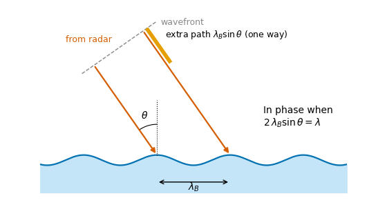
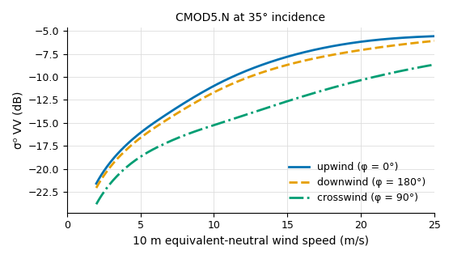

| SAR Concepts: Ocean SAR: Wind, Ships and Oil | |
Over the sea, a SAR sees centimetre-scale waves raised by the local wind. Their strength sets the backscatter, so the image can be turned into wind speed. Oil films that smooth these waves appear dark, and ships appear as bright points on the darker sea.
At incidence angles between about 20° and 60°, most of the echo from the sea comes from surface waves, travelling toward or away from the radar, whose wavelength resonates with the radar (Valenzuela 1978). Echoes from successive crests add in phase when the two-way path difference equals one radar wavelength (Figure 1):
λB = λ / (2 sin θ)
λ is the radar wavelength, θ the local incidence angle and λB the resonant (Bragg) water wavelength. These short waves grow and decay quickly as the wind changes, so backscatter follows the local wind. Longer waves tilt and modulate the Bragg waves, which is how swell becomes visible.

Figure 1. Two rays hitting neighbouring crests differ by 2λB sin θ in two-way path. When this equals λ, the echoes add in phase.
| Band (mission) | λ | λB at 20° | at 35° | at 45° |
|---|---|---|---|---|
| X (TerraSAR-X, 9.65 GHz) | 3.1 cm | 4.5 cm | 2.7 cm | 2.2 cm |
| C (Sentinel-1, 5.405 GHz) | 5.5 cm | 8.1 cm | 4.8 cm | 3.9 cm |
| S (NISAR, 3.2 GHz) | 9.4 cm | 13.7 cm | 8.2 cm | 6.6 cm |
| L (ALOS-2, NISAR, 1.257 GHz) | 23.8 cm | 34.9 cm | 20.8 cm | 16.9 cm |
A geophysical model function (GMF) gives σ0 as a function of the 10 m wind speed v, the angle φ between the wind direction and the radar look direction, and the incidence angle. The C-band CMOD family has the form
σ0VV = B0(v, θ) · [1 + B1(v, θ) cos φ + B2(v, θ) cos 2φ]1.6
B0 carries the speed dependence. B1 makes looking upwind brighter than downwind, and B2 makes both brighter than crosswind (Figure 2). CMOD4 and its successor CMOD5 (Hersbach et al. 2007) were fitted to ERS scatterometer data. CMOD5.N (Hersbach 2008) refits the 28 CMOD5 coefficients for equivalent-neutral wind; its winds are about 0.7 m/s stronger. All are VV models. For HH data, σ0HH is first converted with a polarisation ratio, for example the form of Thompson et al. (1998):
PR = σ0VV / σ0HH = (1 + 2 tan2θ)2 / (1 + α tan2θ)2
α = 0 gives the Bragg ratio for a highly conducting surface (sea water is close to this); α = 2 gives PR = 1.

Figure 2. CMOD5.N σ0VV at 35° incidence (coefficients from Hersbach 2008, Table 1). At 10 m/s, upwind is about 4 dB brighter than crosswind.
Direction ambiguity. A scatterometer views each cell from several azimuths. A SAR gives one σ0 for two unknowns, speed and direction. The direction must come from elsewhere: a numerical weather prediction model, or the orientation of wind streaks (boundary-layer rolls) in the image. Streaks fix the direction only to within 180°. A wrong direction biases the speed, because upwind and crosswind backscatter differ by several dB (Figure 2).
Oil films damp the short waves that carry the Bragg signal, so a slick appears as a dark patch. Detection needs enough wind to roughen the clean sea around it; about 3 to 10 m/s is commonly quoted. Below that range the whole sea is dark. Above it the oil is mixed into the water. Many other things also look dark: low-wind areas, natural biogenic films, rain cells, grease ice and cold upwelling water. Solberg et al. (1999) and Brekke and Solberg (2005) classify dark spots using their shape, contrast and context. A dark spot detector alone cannot tell oil from these look-alikes.
A ship (metal, corners, superstructure) is usually much brighter than the sea around it. A constant-false-alarm-rate (CFAR) detector compares each pixel with local sea statistics measured in a background ring, outside a guard area that excludes the ship itself:
detect if Itarget > μb + t · σb
μb and σb are the background mean and standard deviation. t is set by the probability of false alarm (PFA). Sea clutter at high resolution has heavier tails than a Gaussian. The K-distribution is a common model for it; Crisp (2004) reviews CFAR detectors and clutter models. A Gaussian threshold gives more false alarms than the nominal PFA in rough seas. Cross-polarisation (HV, VH) gives the best ship-to-sea contrast, because sea clutter is weak there. Land must be masked first, or the coast fills the result with detections.
Long swell is imaged through tilt and hydrodynamic modulation, and through velocity bunching caused by the orbital motion of the water. This mapping is non-linear. Waves travelling in azimuth are lost below an azimuth cut-off wavelength (Hasselmann and Hasselmann 1991). Sentinel-1 Wave mode (WV) acquires small vignettes of about 20 km × 20 km over the open ocean. The Level-2 OCN product contains the inverted swell spectrum for each vignette (the OSW component).
incidence_angle
tie-point grid and an ERS, ENVISAT, Sentinel-1 or RADARSAT-2 product. Within each window
(windowSizeInKm, default 20 km), it takes the direction from the wind-streak spectrum
(streaks of 3 to 15 km wavelength) and inverts CMOD5 (Hersbach et al. 2007) for speed between 0.1 and
20 m/s; stronger winds are reported as 20 m/s. The direction keeps the 180° ambiguity, so the upwind/downwind term uses an
arbitrary sign. HH is converted with the ratio above with α = 1. Results go to a
WindField vector (speed, heading) and to
<product>_wind_field_report.xml in the SNAP log folder
(.snap/var/log).backgroundWindowDim in
km (default 0.5; the menu graph uses 4.5) and threshold shift k in dB (default
2.0). The output band is <band>_oil_spill_bit_msk. Oil-Spill-Clustering
then removes clusters smaller than minClusterSizeInKm2 (default 0.1 km²).<band>_ship_bit_msk.
Object-Discrimination keeps targets whose bounding-box diagonal is between 50 and 600 m. It writes
the ShipDetections vector and <product>_object_detection_report.xml.oswPolSpec) or of an ASAR wave
product, together with record metadata such as wind speed and direction.Workflows: Ocean Applications.